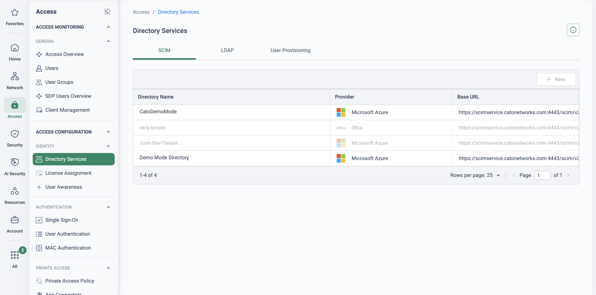
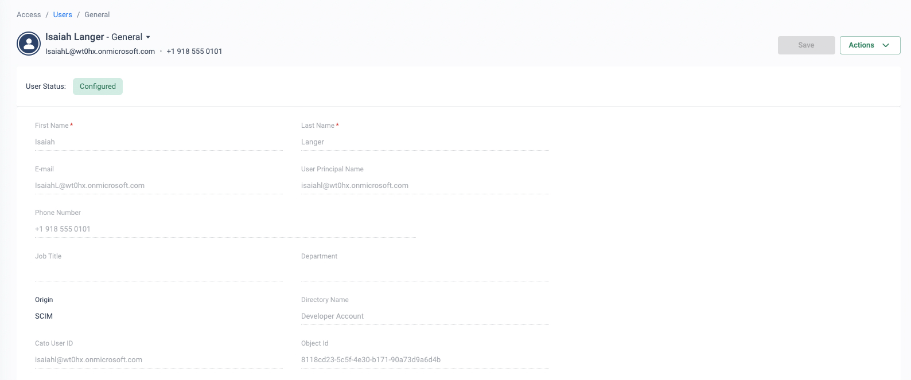
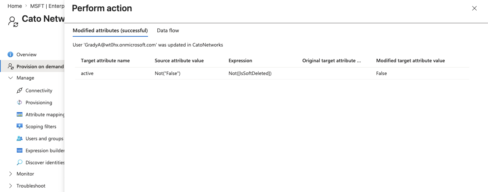
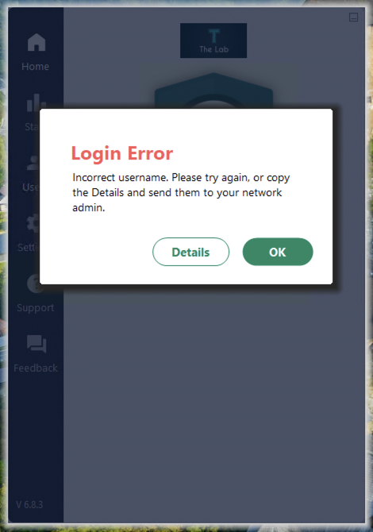

Identity is the policy foundation
Every valuable thing the platform does downstream — a ZTNA rule scoped to contractors, a DLP policy scoped to finance, an event trail that names a person rather than an IP — depends on one upstream fact: Cato knows who the user is. Cato's model makes this worth designing properly: it maintains a single user identity, so once a user is added to a policy, “it is enforced whether the user is located behind a site or remotely”. One identity, one policy, both worlds.
Get identity wrong and the failure is quiet. Traffic from unrecognised users lands in the All Unidentified Users system group, group-scoped rules never match, and users fall through to whatever default rule sits at the bottom of the policy. That is the classic stalled rollout: the policy looks right, the users complain, and nobody can see why.
Access rules miss
ZTNA and firewall rules scoped to groups silently match nothing when the user behind the flow is unidentified — access is decided by the fallback rule, not the design.
Data scopes drift
DLP and CASB policies scoped to “finance” or “engineering” only bind if group membership is provisioned and current — stale sync means stale protection.
Events lose names
Investigations and audits need “Priya uploaded the file”, not “10.20.4.17 uploaded the file”. Attribution is only as good as awareness coverage.
“If I pick any flow out of your firewall logs right now, can you tell me the person behind it — not the IP? And how many of your current rules are per-user exceptions rather than group-scoped policy?”
Four decisions, made once
Identity integration is four decisions. Each has a documented default; the point is to make all four deliberately, before any policy is written that depends on them.
| Decision | Options (documented) | Design call |
|---|---|---|
| Directory & provisioning | SCIM (Entra ID, Okta, OneLogin, DTS) · LDAP from on-prem AD · manual users | SCIM from the corporate IdP — near real-time users and groups. Manual only for lab and break-glass accounts. |
| Authentication | SSO via the IdP · Cato MFA (SMS / authenticator app) · username + password | SSO with MFA enforced in the IdP flow — the IdP stays authoritative for credentials, MFA and conditional access. |
| User awareness behind sites | Identity Agent (Cato Client) · AD Query (WMI on DCs) · Windows Event Forwarding | Identity Agent wherever the Client can be deployed; AD Query or WEF to cover the clientless remainder. |
| Device posture | Posture profiles evaluated alongside identity | Design as identity's sibling — the same groups pair with posture profiles in ZTNA rules from day one. |
1 · Directory & provisioning — SCIM
SCIM creates, updates and disables Cato users straight from the IdP, syncing changes in near real time — and, critically, it syncs user groups, the objects policy will reference. Enable it under Access → Directory Services (SCIM tab), then paste the Base URL and bearer token into the IdP's provisioning app.
- Entra ID: “Cato Networks Provisioning” enterprise app, automatic mode, assign the specific users and groups to sync — Entra initiates sync roughly every 40 minutes. Nested groups are not supported: flatten them in the IdP.
- Okta: enable Create / Update / Deactivate, then Push Groups to sync the groups policy will use.
- Caveats: SCIM overrides existing LDAP groups with the same name; LDAP and SCIM provisioning cannot run simultaneously; unassigning a user in the IdP disables (not deletes) them in Cato.
Group strategy (recommended practice): build purpose-named, flat groups in the IdP for Cato to consume — ztna-contractors, dlp-finance — rather than reusing the org chart. Group names become part of your security policy; change-control them like firewall rules.
2 · Authentication — SSO + MFA
The authentication policy (Access → User Authentication) sets how SDP users authenticate account-wide — SSO, Cato MFA (SMS or an RFC-6238 authenticator app), or username and password — with per-user overrides for exceptions. With SSO, the PoP hands the user to the IdP, the user completes login including the IdP's MFA, and the PoP validates the IdP token before issuing its own Cato token — so conditional-access policy stays where it belongs, in the IdP.
- Sixteen IdPs are supported for user SSO; Entra ID (Azure) and Okta cover all six authentication scenarios, including headless Linux.
- Token validity: duration-based (silent renewal) or “Always Prompt”. Trusted devices skip MFA for up to 30 days — a geolocation change forces re-authentication.
- Users activated with registration codes cannot use SSO or MFA — reserve codes for lab devices.
Protocol note: the current KB states Cato user SSO integrates with OIDC-compatible IdPs. If the estate is SAML-federated today, that is not a blocker — you integrate at the IdP (Entra ID, Okta…), which fronts Cato over OIDC — but surface it in design review rather than discovering it in week three.
3 · User awareness behind sockets
In the office there is no per-user tunnel — the socket carries everyone — so the PoP must learn who sits behind each IP. The documented methods, all configured under Access → User Awareness:
- Identity Agent — the Cato Client runs in the background and reports the device's logged-in identity to the PoP about every 30 seconds, with IP changes reported immediately. With Windows Client v5.18+ / macOS v5.11+ this needs only a one-time authentication and no ZTNA licence. Best fidelity; first choice for managed fleets.
- AD Query — Cato queries domain controllers over WMI for login events (dedicated AD account in Distributed COM Users + Event Log Readers; Directory Services configured first). Covers clientless estates — thin clients, machines the Client can't reach.
- Windows Event Forwarding — DCs forward login events to a collector server that Cato queries; one collection point instead of WMI to every DC. Fits multi-DC estates and locked-down server policies.
Mixed estates mix methods. Design for coverage: every office subnet should have an awareness path, or its users will surface as unidentified.
4 · Device posture — identity's sibling
Access decisions pair who (identity and group) with the state of the device (posture profile: EPP/EDR running, disk encryption, OS version), evaluated continuously. Posture is not this page's story — see De-risking 3rd-Party Access for the full treatment — but it belongs in the same design session.
Define posture profiles under Access → Device Posture at design time, named with the same discipline as your groups, so ZTNA rules can pair group + posture from day one. Retrofitting posture into per-user exceptions later is the same anti-pattern as per-user identity rules.
Where this sits in the Cato SASE platform
- SCIM provisions users and groups from Entra ID or Okta into the CMA; synced groups become the policy contract.
- Remote users sign in to the Cato Client by SSO with the IdP's MFA; the PoP validates the IdP token.
- Behind the Bristol Office Socket the Identity Agent or AD Query names the user behind each IP.
- The PoP enforces one identity-scoped policy; unidentified traffic matches only All Unidentified Users.
One identity plane, every enforcement point
The four decisions interlock: SCIM builds the user and group objects in the Cato Management Application; SSO with MFA authenticates the remote user's Client; the Identity Agent (or AD Query) attributes office traffic behind the socket; and the PoP enforces the same group-scoped policy on both. The amber lane is what this design exists to prevent — a device with no awareness path, matching only All Unidentified Users and the fallback rules.
One identity, both worlds
A single user identity means a policy written once is enforced whether the user is behind a site or remote — no duplicate rulebases for office and home.
Groups as the policy contract
Access is decided by IdP group membership, synced in near real time. Joiners, movers and leavers propagate from HR-driven IdP changes — no firewall change tickets.
Attribution in every event
Events and analytics carry the user's name, host and IP — the audit trail investigations and regulators actually ask for.
Unidentified as a signal
The All Unidentified Users system group turns coverage gaps into something you can see and burn down — before they surface as policy failures.
Identity before policy — the order that works
The dependency chain is strict: policy references groups; groups come from provisioning; users must authenticate and be recognised before any of it matters. Stage the work in that order, with exit criteria between stages.
| Stage | Do | Exit criteria before the next stage |
|---|---|---|
| 1 | Provision. Enable SCIM, connect the IdP app, assign a pilot set of users and the purpose-built groups. | Users and groups appear under Access → Users / User Groups with the IdP shown as the directory source. |
| 2 | Verify groups. Compare member counts against the IdP; flatten any nested groups at source (nesting is not supported over SCIM). | Group membership matches the IdP and updates when you move a test user. |
| 3 | Authenticate. Set the authentication policy to SSO + MFA; pilot users connect with the Client end to end. | Pilot users connect via SSO, MFA prompted in the IdP flow, sessions visible per user. |
| 4 | Attribute. Turn on the Identity Agent and/or AD Query so office traffic behind sockets carries a name. | Office events in Monitor → Events show usernames, not bare IPs; unidentified traffic is trending down. |
| 5 | Only now: policy. Write (or migrate) ZTNA, firewall and DLP rules that reference the synced groups — never individual users. | Rules match in monitoring; All Unidentified Users hit counts near zero. |
Rules imported against groups that are empty, half-synced or misnamed match nothing — silently. Users fall through to defaults, the project team responds with per-user emergency exceptions, and those exceptions never get removed. Never translate a legacy per-user rulebase one-to-one: map it to groups first, prove the groups populate, then migrate. And treat the IdP group model as part of the security policy — rename a synced group and every rule that referenced it is orphaned.
How to walk it in the CMA
This is a design-review walkthrough as much as a demo. Run it with the identity team in the room — the IdP admin owns half of these decisions, and rollouts stall when they hear about SCIM assignments and group strategy last.
-
Start where identity enters: provisioning
Access → Directory Services
Open the SCIM tab: the Base URL and bearer token are all the IdP needs — the IdP pushes, Cato receives. Contrast with manual user admin: joiners and leavers handled by the IdP, in near real time.
-
Show the synced objects policy will use
Access → Users · Access → User Groups
Point out the directory source against each user, then open a synced group and its Members tab. This group object is the contract between the IdP and every rule you will write.
-
Walk the authentication policy
Access → User Authentication
Show the account-wide method (SSO, MFA, or password), token validity options, and where per-user overrides live. Explain the dual-token flow: MFA and conditional access happen in the IdP; the PoP validates and issues the Cato token.
-
Show awareness for the office
Access → User Awareness
Show the Identity Agent enablement — the Client reports the logged-in identity roughly every 30 seconds — and where AD Query domain controllers are configured for the clientless remainder.
-
Show identity-scoped policy
Security → Internet Firewall · Security → WAN Firewall
Walk a rulebase where every rule references a group and no rule references an individual. One rule for ztna-contractors replaces a page of per-user exceptions.
-
Prove attribution end to end
Monitor → Events
Filter events for a pilot user — say Priya — and show office and remote activity under one identity: same name behind the Bristol Office socket in the morning, on the Client from home in the afternoon.
-
Close on the gap detector
Search for traffic with no user attribution and frame All Unidentified Users as the burn-down list: “when this trends to zero, your policy means what it says — that's the state you migrate policy on top of.”
How to prove it in the customer's tenant
This is the week-zero PoV — the identity-integration pilot that every other runbook in this library quietly depends on. The hybrid-workforce pilot pins its cohort in a SCIM-synced group; the third-party pilot scopes contractors by IdP group; every security PoV wants its evidence attributed to a named person. Run identity as its own short PoV first, with its own success criteria agreed up front per Running a Cato PoV — then the pilots in Securing the Hybrid Workforce and De-risking 3rd-Party Access inherit a proven foundation instead of a hopeful assumption.
| Success criterion | What we prove | Evidence artefact | Where it lives |
|---|---|---|---|
| Provisioning live from the IdP | Pilot users and groups exist in Cato via SCIM, and a group membership change made in the IdP is reflected in Cato within one measured provisioning cycle (Entra ID initiates sync every 40 minutes) | Dated before/after screenshots of the group's Members tab, beside the IdP provisioning-log entry | Access → Users · Access → User Groups |
| SSO + MFA signs in the Client | A pilot user signs in to the Cato Client through the IdP over OIDC, with the IdP's MFA prompted inside the flow, and the session lands under their single identity | Screenshot of the IdP MFA prompt inside the Client sign-in, plus the connected session on the user's page | Cato Client · Monitor → Users |
| Named users behind the socket | The Identity Agent (or AD Query) turns IP-only events from the pilot office subnet into named-user events | Paired event records from the same subnet — one pre-awareness showing only an IP, one post showing the username | Monitor → Events |
| The leaver drill | A user unassigned or disabled in the IdP is disabled in Cato at the next sync and a fresh Client sign-in fails — with the IdP-to-dead window measured, not assumed | Three timestamps: the IdP audit entry, the user showing Disabled in Cato, the failed sign-in attempt | Access → Users · Monitor → Events |
| Attribution on every surface | The same pilot user is named — not an IP — in Events, in Experience Monitoring and in the dashboards the wrap-up will quote | One screenshot per surface, same user, same day, dated into the evidence doc | Monitor → Events · Home → Experience Monitoring |
- The IdP admin in the room — creating the provisioning app, assigning users and reading the provisioning log all happen on their side. This PoV cannot run as a Cato-only exercise; that is rather the point of it.
- A SCIM-capable IdP — SCIM provisioning is documented for Entra ID (Azure), Okta, OneLogin and DTS. Purpose-built, flat pilot groups created in the IdP first: nested groups are not supported over SCIM.
- One pilot socket site — an office subnet whose managed devices can run the Cato Client as Identity Agent (Windows Client v5.18+ / macOS v5.11+ report identity with a one-time authentication and no ZTNA licence), or domain-controller access for AD Query where the Client cannot go.
- No TLS inspection required — none of these proofs needs content inspection, which is exactly why identity runs as week zero: it never waits on a privacy approval.
- The leaver drill agreed in writing — a named test account (call her Amara) that the IdP admin is authorised to disable, and agreement on what "access is dead" means: next sign-in refused, or live session ended. Measure whichever was agreed.
Configuration walkthrough
-
Enable SCIM and connect the IdP
Access → Directory Services
On the SCIM tab, enable SCIM provisioning, save, and copy the Base URL and Bearer Token. In Entra ID, create the Cato Networks Provisioning enterprise app, paste them as Tenant URL and Secret Token, run Test Connection, set provisioning to Automatic and start it — assigning only the pilot users and groups. Write down the cycle time: Entra initiates sync every 40 minutes, and that figure defines every measured window in this PoV (SCIM Provisioning with Entra ID, Provisioning Users with SCIM).

What Directory Services → SCIM looks like once set up (demo tenant): a provisioning directory per IdP (Entra ID, Okta) with the Cato SCIM Base URL each one posts to — the bearer token is entered once in the directory's edit pane and never shown again. -
Verify the synced objects — and time the sync
Access → Users · Access → User Groups
Confirm pilot users show the IdP as their directory source and group member counts match the IdP. Then run the first measurement: move a test user into a pilot group in the IdP, note the time, and watch the Members tab until the change lands. Entra's on-demand provisioning can push a single user faster — but it does not support assigning users to a group, so group-membership timings must be taken against the automatic cycle.

What a correctly synced pilot user looks like (lab tenant, fictional identities): origin SCIM, the IdP named as directory source, identity fields populated from the directory and read-only in Cato — the record exists here because the IdP says so, which is the whole design. -
Set the authentication policy to SSO
Access → User Authentication
Set the account-wide method to SSO so sign-in, MFA and conditional access stay in the IdP; keep one break-glass admin on a per-user override (Access → Users → User Settings → Authentication). Two facts to state before anyone asks: Cato user SSO is OIDC only — a SAML-federated estate integrates at the IdP, which fronts Cato over OIDC — and users provisioned with registration codes cannot use SSO or MFA at all (SSO Authentication for Users with Cato, Configuring the Authentication Policy).
-
Sign the pilot cohort in through the Client
Monitor → Users
Each pilot user signs in to the Cato Client: the PoP hands them to the IdP, they complete login including the IdP's MFA, and the PoP validates the IdP token before issuing the Cato token. Capture the MFA prompt mid-flow and the resulting session on the user's page — that pair is the evidence for the SSO criterion, and the moment the customer's identity team sees their own conditional-access policy governing Cato access.
-
Turn on user awareness behind the pilot socket
Access → User Awareness
Take the "before" screenshot first — events from the pilot subnet showing bare IPs. Then enable the Identity Agent: the Client on each managed device reports the logged-in identity to the PoP about every 30 seconds, with IP changes reported immediately. For machines the Client cannot reach, add AD Query domain controllers instead (service account in Distributed COM Users, Event Log Readers and Server Operators; WMI reachable; Directory Services configured first). The before/after event pair from the same subnet is the most persuasive artefact this PoV produces (Using Cato Identity Agents, Using AD Query for User Awareness).
-
Run the leaver drill
Access → Users · Monitor → Events
The IdP admin unassigns Amara from the provisioning app (or disables her) and notes the time. At the next SCIM sync she is automatically disabled — not deleted — in Cato: confirm her state under Access → Users, then have her attempt a fresh Client sign-in and record the refusal. Report the measured window honestly (on Entra, up to one 40-minute cycle) and check it against whatever the customer's leaver SLA actually is — for most, "provably dead within the hour, with an audit trail at both ends" beats their current deprovisioning process by days. A disabled user is also no longer identified by the Identity Agent, so attribution stops with access.

The Cato end of the leaver drill (lab tenant, fictional identities): what the pilot user's record should show — flipped to Disabled by the SCIM sync, not deleted, licence returned, attribution stopped. 
The IdP end of the same drill (IdP sandbox, fictional identities): Entra's provisioning log recording active → False pushed to Cato. This plus the screenshot above is "an audit trail at both ends" — pair them with the two timestamps and the measured window is closed. 
The user end (lab tenant, fictional identity): after the SCIM disable, the leaver's fresh Client sign-in ends in a Login Error — the refusal to record, timed against the IdP change.
What good output looks like


Troubleshooting the pilot
Sync lag — the change hasn't landed
A group change made in the IdP is not yet in Cato. Check the IdP's provisioning log before touching anything in Cato — Entra pushes on its own 40-minute cycle, and on-demand provisioning cannot assign users to groups. If the log shows the push succeeded and Cato still disagrees, that is a finding; if the log shows nothing, the IdP hasn't sent it yet.
Nested groups — members missing
A synced group shows fewer members than the IdP because some belong via a nested group. Nested-group provisioning is not supported over SCIM: flatten the pilot groups in the IdP so every member is direct, and keep the flat, purpose-named group pattern from the design section above.
Two directory sources fighting
Estates mid-migration try to run LDAP and SCIM together — and SCIM sync overrides existing LDAP groups with the same name, silently rewriting policy scope. Provision from one source, follow the documented LDAP-to-SCIM migration path, and treat any group-name collision as a change-control event, not a coincidence.
The leaver won't come back
After the drill, re-enabling the test user appears to do nothing. Reinstatement follows the same cycle as removal: Entra revives a disabled user only at the next provisioning cycle, and an Okta-disabled user stays disabled until explicitly re-enabled. Wait out the cycle — do not hand-edit users in Cato mid-drill, or the measurement is void.
Identity Agent silent — events still IP-only
Check client versions first: licence-free enhanced awareness needs Windows v5.18+ or macOS v5.11+, Linux has no enhanced awareness, and macOS Ventura devices need a reboot after a Client upgrade before reporting resumes. Remember disabled or deleted users are never identified — a stale test account produces exactly this symptom.
AD Query can't reach the DCs
No login events arrive from a Real Time Sync domain controller. Verify the service account sits in Distributed COM Users, Event Log Readers and Server Operators, that WMI/DCOM ports are open from the collector path, and that Directory Services was configured before User Awareness — a CMA-to-DC connectivity failure is the documented first suspect.
Gotchas & exit
- Two different clocks. SCIM pushes on the IdP's cycle (Entra: every 40 minutes); AD/LDAP directory sync is daily at 12:00 am UTC or on demand. Quote the right clock for the right claim, or the leaver-drill numbers will not survive scrutiny.
- OIDC only, and say it early. SAML-based user SSO is not supported; a SAML-federated estate integrates at the IdP. Surfacing this in week zero is precisely why identity runs first.
- Awareness is source-side. Users identified behind a site are matched as traffic sources — the documented limitation is that they are not matched in WAN destination rules. Scope success criteria to source attribution.
- Drill on a test account, not a real leaver. Amara exists so nobody disables a live employee mid-meeting — and so the re-enable behaviour above is a footnote, not an incident.
Unwinding cleanly: there is rarely anything to unwind — this PoV is the production foundation, and if the engagement continues, the synced groups, SSO policy and awareness config are exactly what the next pilot builds on. If the decision is a genuine no: stop provisioning from the IdP side (users become disabled, not deleted), remove the provisioning app assignment, disable the Identity Agent under Access → User Awareness, and return the authentication policy to its prior method. Then hand the customer the measured sync and leaver windows anyway — they are a useful audit of the IdP estate regardless of the outcome.
Resources
Documentation
- Overview of Directory Services and User Awareness
- Provisioning Users with SCIM
- SCIM Provisioning with Entra ID
- SCIM Provisioning with Okta
- Using Cato Identity Agents for User Awareness
- Using AD Query for User Awareness
- SSO Authentication for Users with Cato
- Configuring the Authentication Policy for Cato Clients
- Understanding the Single User Identity
- Working with User and System Groups